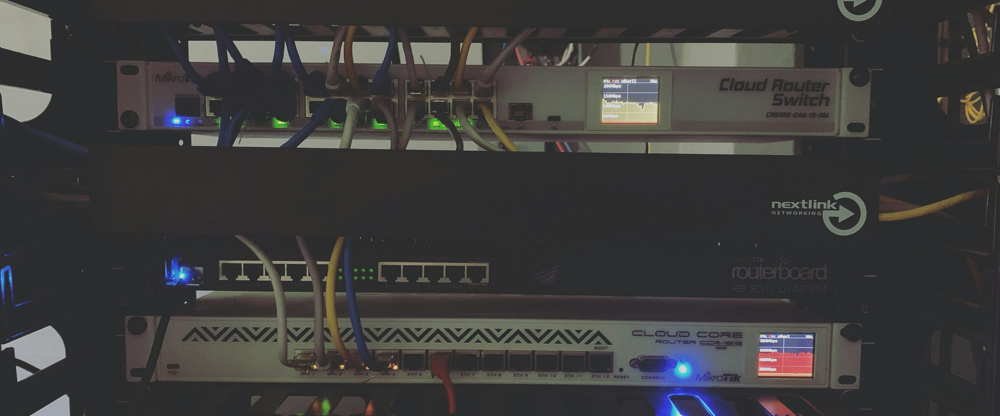

IN PLAIN ENGLISH
Incident Responders & On-Call
An alert may name a hostname or interface, but it does not always tell the responder where to stand. RackTrack adds the physical context: rack, cabinet, device position, visible ports, and connection clues.
Response slows down when the physical location is unclear.
A packet loss or link issue appears. The team checks monitoring, asks who knows the rack, and may still walk to the wrong cabinet first.
RackTrack captures the real cabinet.
RackTrack keeps the rack record current enough to search by device, rack, row, site, or visible connection context.
The team gets a record it can use.
The responder starts at the right cabinet with the right physical clues, reducing the time spent searching before action begins.

WHAT THE TEAM SEES
Clear rack evidence, not another mystery report.
- A faster path from alert to location.
- Device and port context before the floor walk.
- Less dependency on memory during pressure.
DECISIONS MADE EASIER
Packet loss response without tool-hopping.
Use one incident path to show how physical context can remove the first minutes of uncertainty.
START SMALL